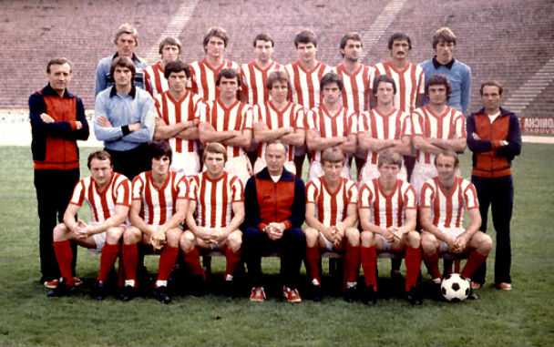

ФК Црвена звезда
Шампиони државе 2018!
Убедљивом победом над Сарајевом (4:1), практично јединим ривалом који је у првенству 1979/80 могао да јој ускрати шампионско славље, Црвена звезда је тринаести пут, у својој, у то време, три и по деценије дугој и славној историји, постала национални првак. Сарајево је било дуго испред Звезде, али су га црвено-бели престигли и два кола пре краја осигурали прво место, и на тај начин је, по ко зна који већ пут доказала оно што су сви знали – да од београдских црвено-белих у југословенском фудбалу нема бољег, успешнијег и популарнијег клуба!